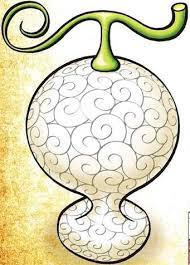
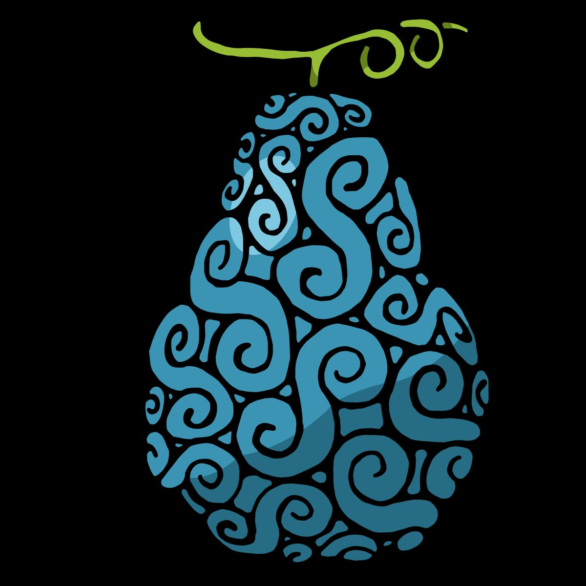
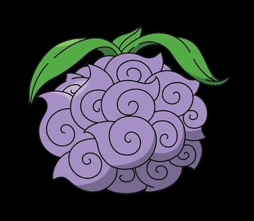

A Gomu Gomu no Mi é uma Akuma no Mi do tipo Paramecia que concede ao usuário as propriedades da borracha, transformando-o em um Homem de Borracha.  A Mochi Mochi no Mi é uma Akuma no Mi especial do tipo Paramecia que permite ao usuário criar, controlar e se transformar em massa.A Bomu Bomu no Mi é uma Akuma no Mi do tipo Paramecia que permite ao usuário fazer qualquer parte de seu corpo explodir, seja cabelo, muco ou respiração, tornando o usuário um Bomba Humana. A Doku Doku no Mi é uma Akuma no Mi tipo Paramecia que concede ao usuário a capacidade de produzir e controlar diferentes tipos de veneno, bem como a imunidade de subvenção para todas as formas de veneno, fazendo com que o usuário se torne um Humano Veneno A Hana Hana no Mi é uma Akuma no Mi tipo Paramecia que permite ao usuário replicar e brotar pedaços de seu corpo a partir da superfície de qualquer objeto ou coisa viva. A Ope Ope no Mi é uma Akuma no Mi do tipo Paramecia que permite ao usuário criar um espaço esférico ou "sala", no qual o usuário tem total controle sobre o posicionamento e orientação dos objetos dentro dele, tornando-o um Humano de Livre ModificaçãoA Yomi Yomi no Mi é uma Akuma no Mi tipo Paramecia, que permite ao usuário voltar à vida depois de morrer.  